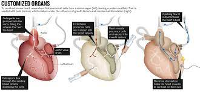

| 
| El 2 de julio, del 2001 Robert Tools recibió el Corazón de Reemplazo implantable de AbioCor producido por la empresa AbioMed de Danvers, Massachusetts. Fue el primer trasplante de un corazón artificial completamente autocontenido. La cirugía se realizó en la University of Louisville en el Jewish Hospital en Louisville, Kentucky. Tom Christerson sobrevivió por 17 meses luego de otro trasplante AbioCor. El 6 de septiembre de 2006 el dispositivo AbioCor fue el primer corazón artificial completamente implantable aprobado bajo las denominadas 'dispositivos de uso humanitarios'.
CARMAT SA, firma francesa, ha desarrollado un corazón artificial cuya primera implantación fue en un paciente de 75 años de edad, se llevó a cabo el 18 de diciembre de 2013, por el equipo del Hospital Europeo Georges Pompidou en París (Francia). El paciente falleció 75 días después de la operación. El prototipo utiliza sensores electrónicos integrados y se hizo a partir de tejidos animales químicamente tratados, llamados "biomateriales", o un "pseudo-piel" de biosíntesis, materiales microporosos. El dispositivo CARMAT diferencia de los diseños anteriores por estar destinado a ser utilizado en casos de insuficiencia cardiaca terminal, en lugar de ser utilizado como un dispositivo de puente mientras el paciente espera un trasplante. Con 900 gramos pesa todavía casi tres veces que el corazón típico y está dirigido principalmente hacia los hombres obesos. También requiere que el paciente lleva una batería de Li-Ion adicional. La vida útil prevista del corazón artificial es de alrededor de 5 años |